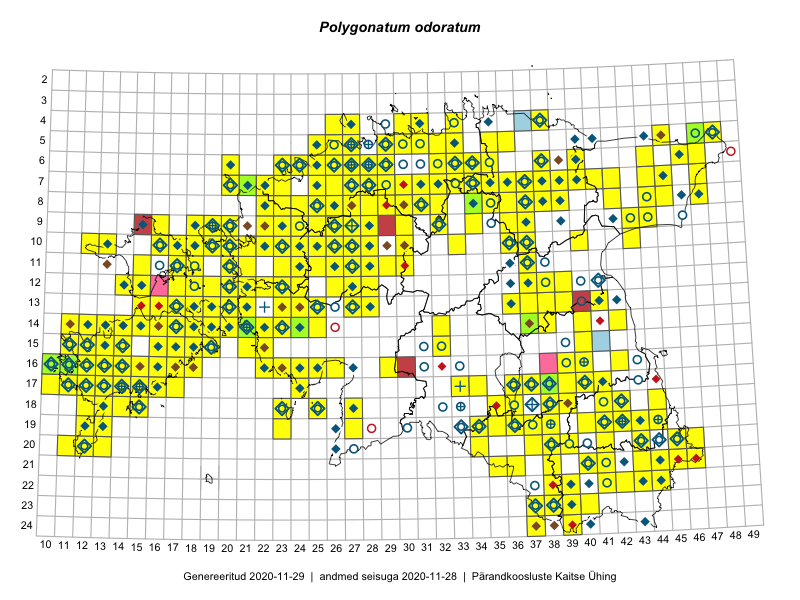

Polygonatum odoratum
Uuendatud: 2016-12-02
Kaardile koondatud taksonid: Polygonatum odoratum (Mill.) Druce

Kaart põhineb 409 kirjel, neist vaatlusi 408 ja eksemplare 1. Taksonit on leitud 243 ruudust.
Kuvatud viited 20 esimesele andmebaasikirjele, ülejäänud PlutoFis
- Tiit Hallikma, Toomas Kukk, Indrek Tammekänd: 2015-06-09: 12-28: ala
- Toomas Kukk, Eerik Leibak: 2015-08-09: 13-15: ala
- Malle Leht: 2015-08-02: : ala
- Peedu Saar, Liina Oja: 2015-05-21: 16-24: ala
- Peedu Saar, Toomas Kukk: 2015-05-27: 09-16: ala
- Toomas Kukk, Eerik Leibak: 2015-08-09: 14-15: ala
- Toomas Kukk, Eerik Leibak: 2015-08-08: 15-18: ala
- Toomas Kukk, Peedu Saar, Kersti Tambets, Sten Mander, Janika Sammasto: 2015-08-05: 17-14: ala
- Toomas Kukk, Eerik Leibak: 2015-08-12: 10-17: ala
- Toomas Kukk, Peedu Saar: 2014-09-25: 07-42: ala
- Peedu Saar, Toomas Kukk: 2015-05-26: 10-16: ala
- Rein Kalamees, Kersti Püssa: 2015-08-09: 05-31: ala
- Rein Kalamees: 2015-09-03: 05-32: ala
- Ott Luuk: 2014-07-24: 12-20: ala
- Ott Luuk, Jaak-Albert Metsoja: 2015-05-27: 12-22: ala
- Peedu Saar, Ott Luuk: 2015-06-21: 14-42: ala
- Toomas Kukk, Raivo Kalle: 2015-05-12: 10-40: GPS punkt
- Rein Kalamees, Kersti Püssa: 2015-05-28: 21-46: ala
- Peedu Saar: 2015-07-04: 18-44: ala
- Toomas Kukk, Peedu Saar: 2014-07-03: 14-21: ala